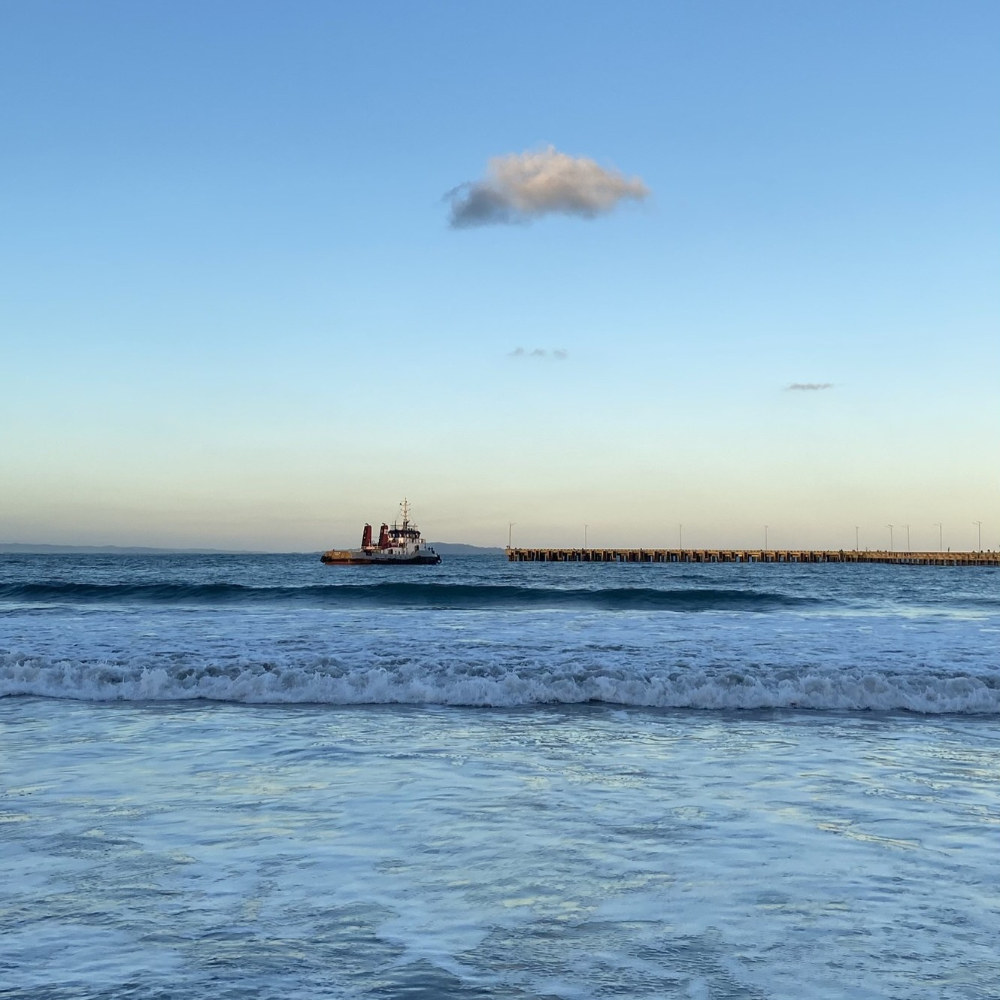


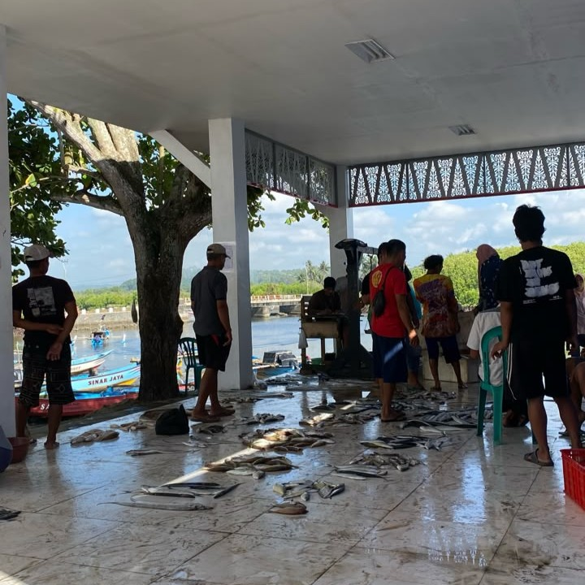




Cerita
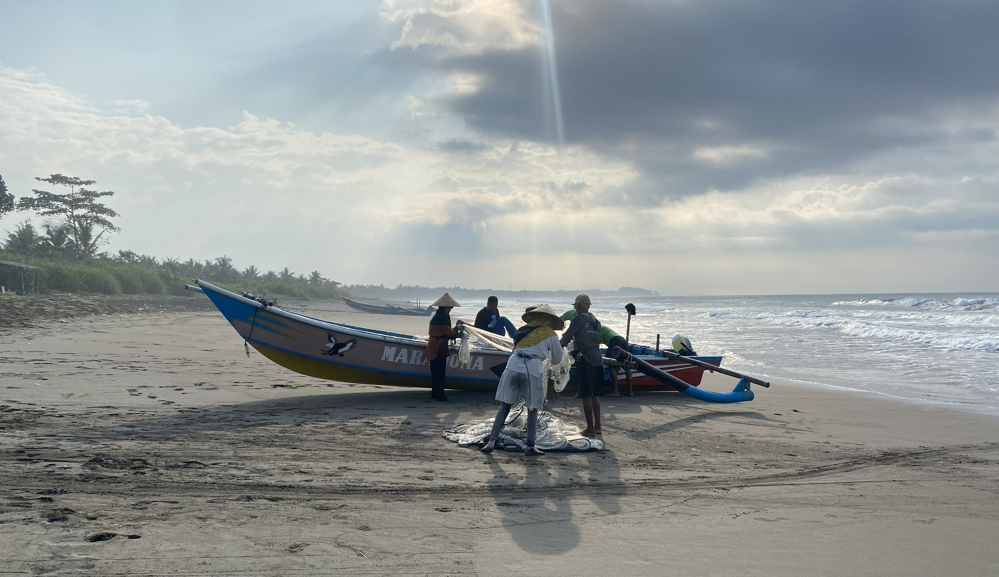
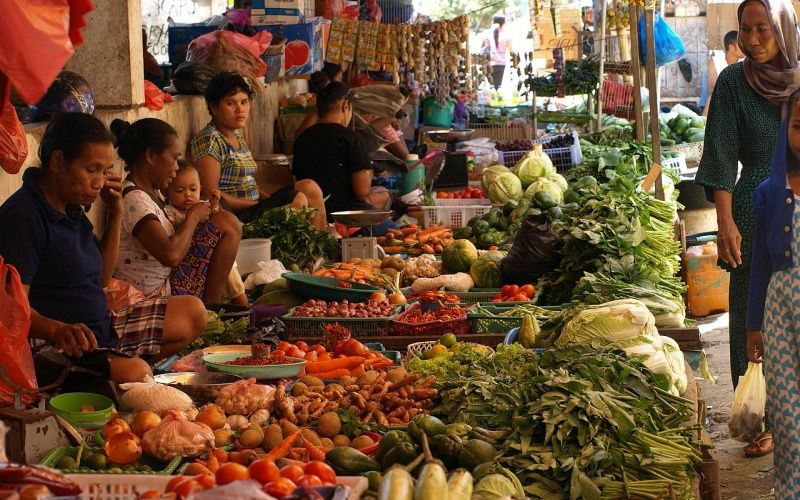
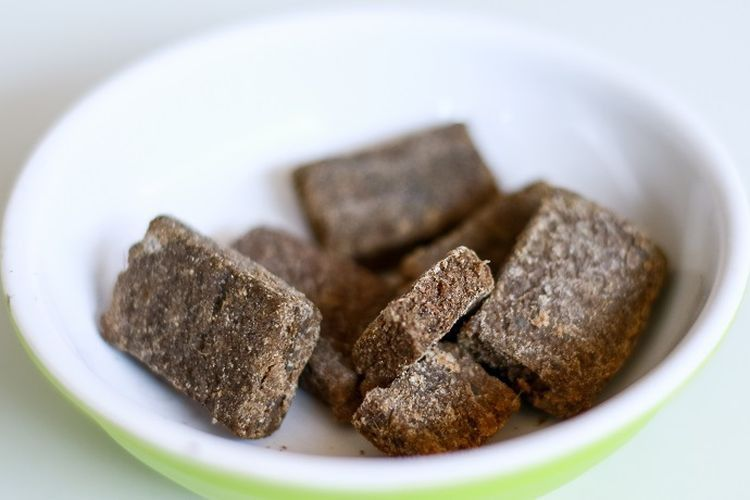
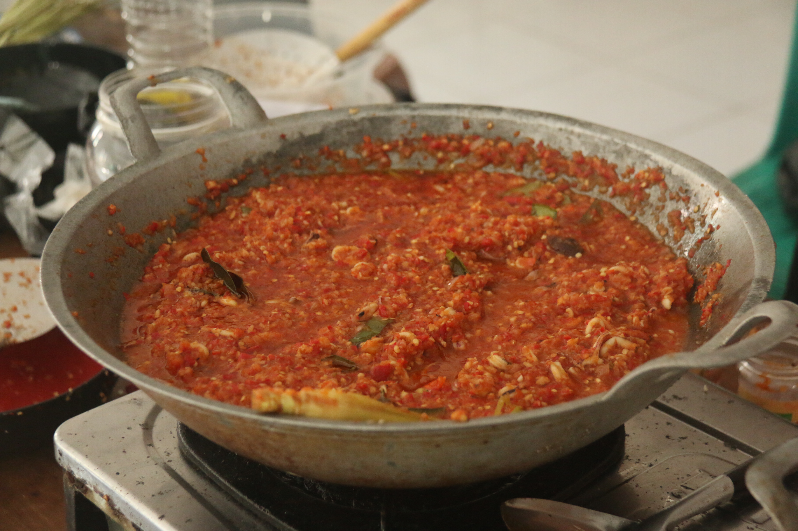
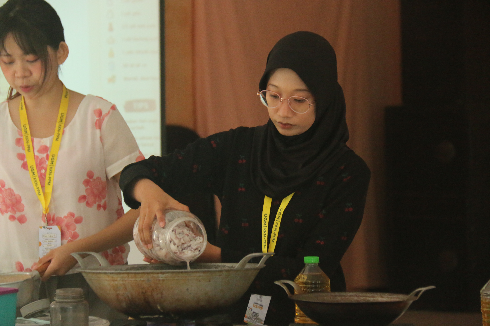
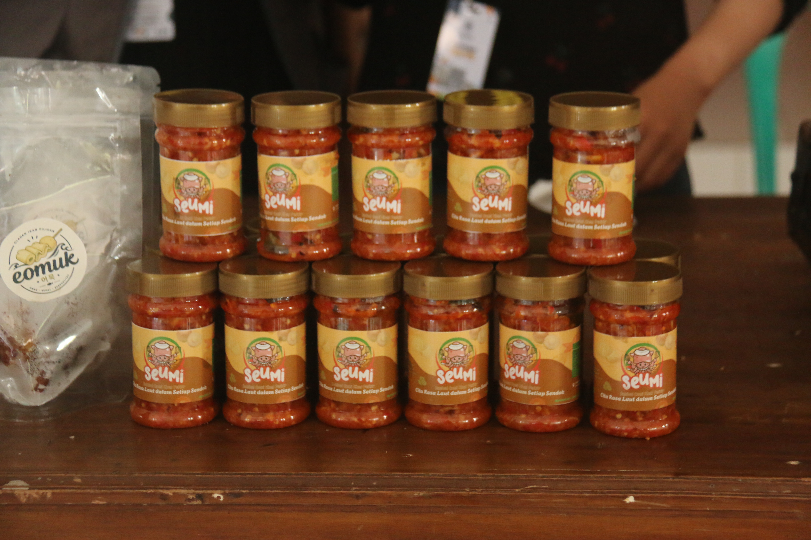
Rincian Produk
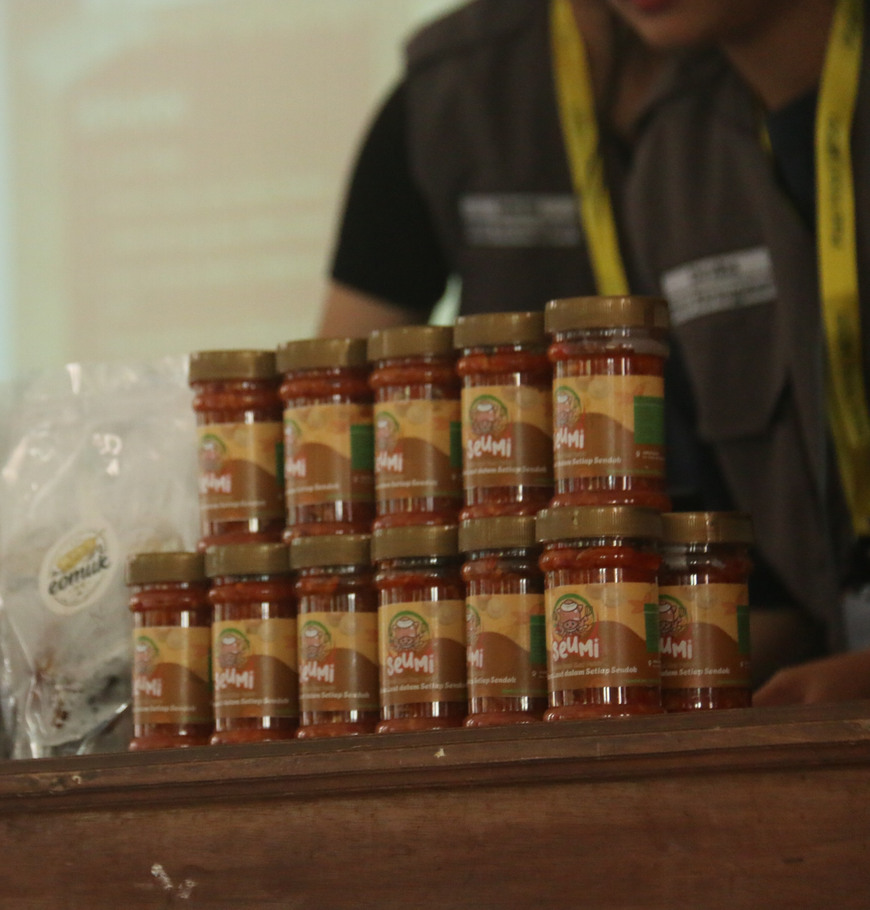
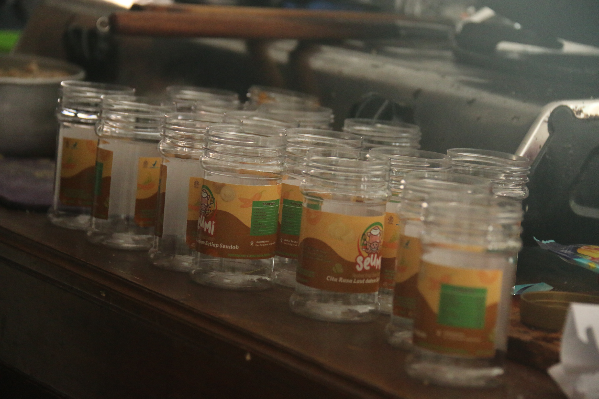
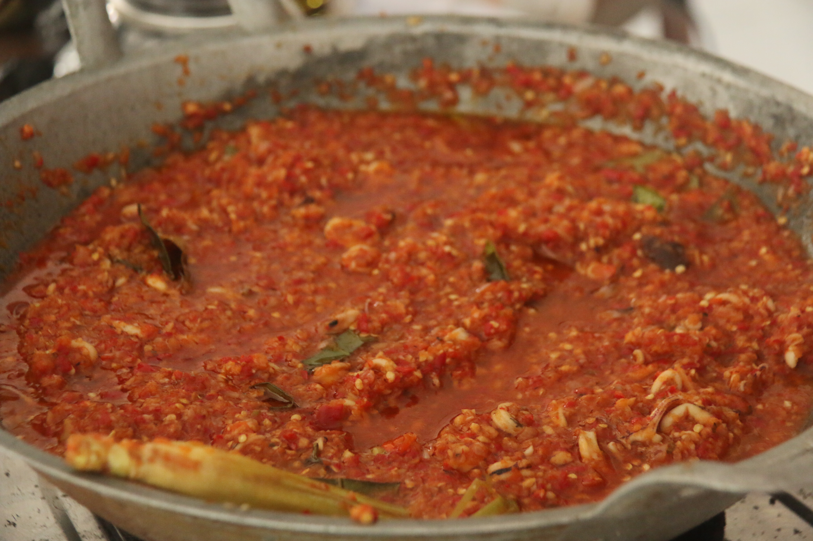
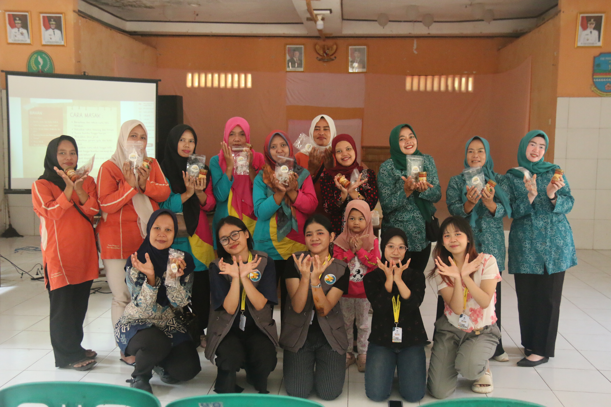
| Bahan | Takaran |
|---|---|
| Cumi Segar | 45 gr |
| Cabai Merah | 50 gr |
| Minyak Goreng | 40 ml |
| Bawang Merah | 20 gr |
| Tomat | 15 gr |
| Bawang Putih | 10 gr |
| Gula | 3 gr |
| Kaldu Bubuk | 1 gr |
| Daun Jeruk | 2 lbr |
Titik Penjualan
Geser kartu di bawah untuk melihat lokasi di peta, atau ketuk penanda pada peta.
* Lokasi bersifat perkiraan, hubungi toko untuk memastikan ketersediaan stok.